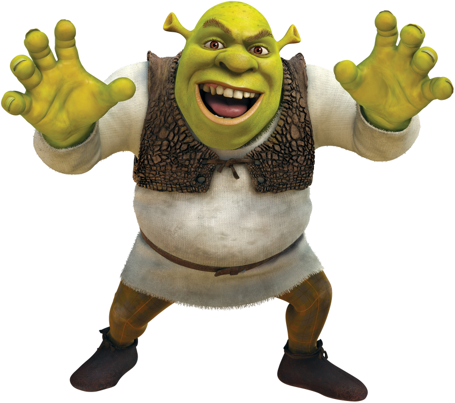

Shrek (???? - ????) is a fictional character from the film Shrek (2001). This is a joke page, just like the joke video embedded below.
This analysis of Shrek from a Marxist perspective permanently altered my world view, specifically about the relation between the means of production. Obviously, this analysis is not the most in depth analysis one can take from Shrek, even if it is a movie made for children. Personally, this video is the embodiment of what the Jonas Čeika YouTube channel is about, taking normally serious topics such as philosophy, sociology, and or cultural critiques and combining them with an unserious topic such as Shrek or Mariah Carey.
If there is any place to start with this channel, it is here. The video is not in depth enough to need to take notes and covers a universally known subject Shrek. There are terms that the average person would not know, however making the video a bit alienating for the general masses. It is a great video to dip your toe into the vast pool of Marxism, like it was for myself. The video essentially portrays Shrek as a liberal, unwilling to challenge the status quo only through reforms and not in a meaningful way, thus preserving the exploitation of the masses.
Read Biography Here, If You For Some Weird Reason Want To Do That